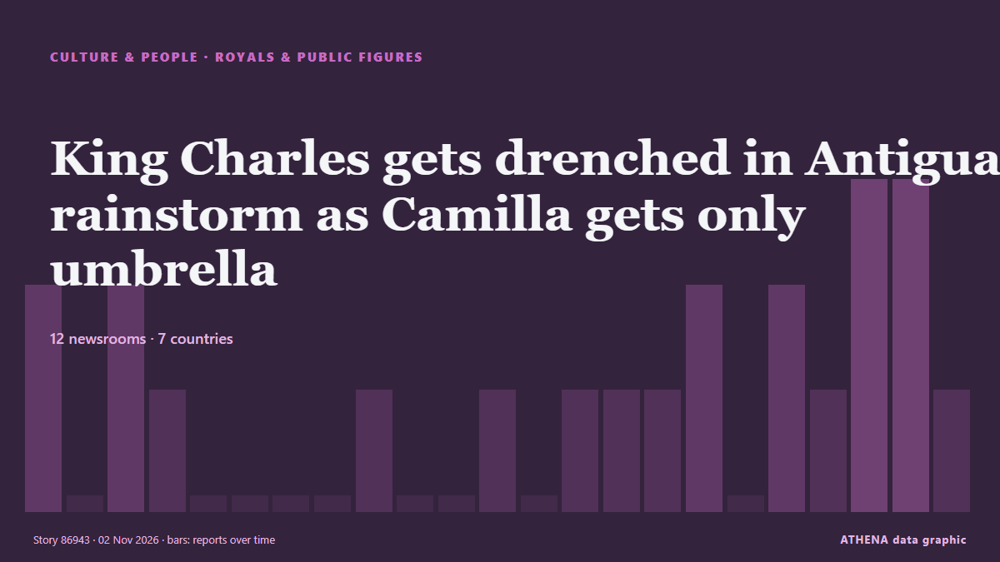

King Charles gets drenched in Antigua rainstorm as Camilla gets only umbrella

King Charles flung up his hands in despair as he was caught in a tropical rainstorm in Antigua, while his wife Queen Camilla strolled off with the only available umbrella. de CBC News (alternative feed)
Informado de forma independiente por 12 medios de 7 países desde el 1 nov; el primero fue Malay Mail; la cobertura va perdiendo fuerza. Deportes y cultura se archivan sin evaluación de riesgo. La confianza es del 87 % (alta): lo corroboran 12 medios independientes, con una fiabilidad media de las fuentes del 71 %. Medios por país: Reino Unido (13), Malasia (2), Singapur (1). Cobertura: del 1 nov al 2 nov, 45 horas.
Qué ha cambiado: 16 informaciones nuevas de 10 redacciones en las 24 horas hasta el 2 nov.
Primer titular: Tok Mat to lead Malaysia’s delegation to CHOGM 2026 in Antigua and Barbuda
Los titulares se muestran en inglés, tal como se publicaron.
De un vistazo
Seleccionado, puntuado y redactado por la metodología publicada de ATHENA. Ningún editor interviene en eventos concretos. Cómo se elabora ›
| 01 Nov 02:24 UTC | 2 |
|---|---|
| 01 Nov 04:24 UTC | 0 |
| 01 Nov 06:24 UTC | 2 |
| 01 Nov 08:24 UTC | 1 |
| 01 Nov 10:24 UTC | 0 |
| 01 Nov 12:24 UTC | 0 |
| 01 Nov 14:24 UTC | 0 |
| 01 Nov 16:24 UTC | 0 |
| 01 Nov 18:24 UTC | 1 |
| 01 Nov 20:24 UTC | 0 |
| 01 Nov 22:24 UTC | 0 |
| 02 Nov 00:24 UTC | 1 |
| 02 Nov 02:24 UTC | 0 |
| 02 Nov 04:24 UTC | 1 |
| 02 Nov 06:24 UTC | 1 |
| 02 Nov 08:24 UTC | 1 |
| 02 Nov 10:24 UTC | 2 |
| 02 Nov 12:24 UTC | 0 |
| 02 Nov 14:24 UTC | 2 |
| 02 Nov 16:24 UTC | 1 |
| 02 Nov 18:24 UTC | 3 |
| 02 Nov 20:24 UTC | 3 |
| 02 Nov 22:24 UTC | 1 |
Por qué estas cifras
Importancia
Riesgo
Confianza
La cobertura: quién informó y cuándo
titular tal como se publicó · abre el original- Malay Mail · MalasiaTok Mat to lead Malaysia’s delegation to CHOGM 2026 in Antigua and Barbuda
- New Straits Times · MalasiaTok Mat to lead Malaysia's delegation to CHOGM 2026 in Antigua and Barbuda
- Belfast Telegraph · Reino UnidoKing and Queen to attend Antigua and Barbuda’s independence parade
- Evening Standard (London) · Reino UnidoKing and Queen to attend Antigua and Barbuda’s independence parade
- Evening Standard (London) · Reino UnidoKing and Queen attend Sunday service in Antigua
- Manchester Evening News · Reino UnidoKing Charles soaked at Antigua parade as he asks 'where's the umbrella?'
- The Irish News (Belfast) · Reino UnidoCricket star ducks question on slavery during King’s Antigua and Barbuda visit
- WalesOnline · Reino UnidoBemused King Charles asks key question after getting drenched on royal tour
- The Straits Times · SingapurCharles left without umbrella in rainstorm fit for a king
- Asharq Al-Awsat (English) · Arabia SaudíCharles Left without Umbrella in Rainstorm Fit for a King
- CBC News (alternative feed) · CanadáKing Charles gets drenched in Antigua rainstorm as Camilla gets only umbrella
- Breaking Belize News · BeliceKing of Belize left in the rain at Antigua’s independence celebration
- Gulf News · Emiratos Árabes UnidosKing Charles left drenched after Queen Camilla takes shelter from tropical storm
- The Irish News (Belfast) · Reino UnidoKing and Queen view slavery artefacts during Antigua and Barbuda visit
- Evening Standard (London) · Reino UnidoSorry about the prime minister, Idris Elba says to King as they meet in Antigua
- Belfast Telegraph · Reino UnidoSorry about the prime minister, Idris Elba says to King as they meet in Antigua
- Manchester Evening News · Reino UnidoIdris Elba issues cryptic five-word message to King Charles in unexpected meeting in Antigua
- Belfast Telegraph · Reino UnidoKing chats with Sir Idris Elba during unexpected meeting in Antigua
- Evening Standard (London) · Reino UnidoKing chats with Sir Idris Elba during unexpected meeting in Antigua
- Evening Standard (London) · Reino UnidoIdris Elba sympathises with King after Charles drenched by rain on Antigua trip